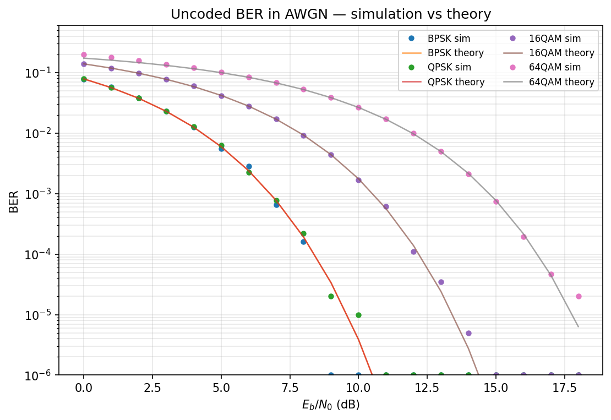
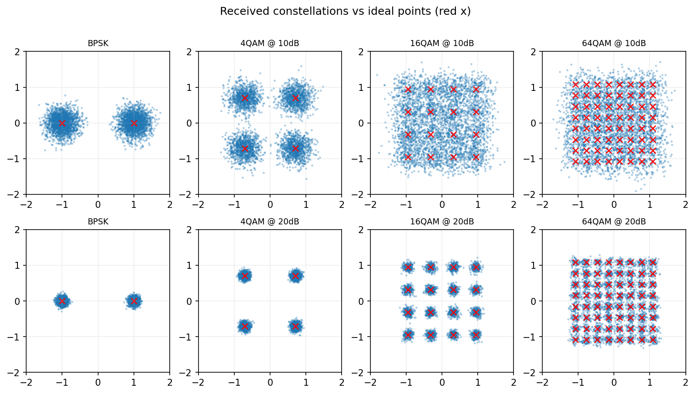

01 总览与架构¶
这个项目在干什么¶
用 Python（只用 NumPy/SciPy，不用现成通信库）把一条数字通信物理层收发链路从比特到比特完整实现出来，再用这条链路"自己产数据"，训练一个深度神经网络识别信号的调制方式。
一句话版本（可直接用于自我介绍）：
"我用 Python 从零实现了一套数字通信物理层仿真平台：从信道编码、调制、成型滤波，到多径信道、定时同步、载波同步、信道估计与均衡，链路误码率全程与理论曲线对齐；在此之上还实现了 OFDM 收发机（参照 802.11a 帧结构）和基于深度学习的自动调制识别。"
先建立物理图像：信号一路上经历了什么¶
面试之前先在脑子里装下这张图。发射端是"把比特变成能在空中飞的波形"，接收端是"把被信道蹂躏过的波形还原成比特"：
比特 ──► 信道编码(加冗余) ──► 交织 ──► 调制(比特→复数符号)
──► 上采样+成型滤波(符号→带限波形) ──► 上变频 ──► [空中]
[空中] 多径衰落 + 多普勒/频偏 + 噪声，波形被拖尾、旋转、污染
接收 ──► 下变频 ──► 匹配滤波(把波形"浓缩"回符号) ──► 定时同步(找对采样点)
──► 载波同步(校频偏/相位) ──► 信道估计(测量信道干了什么)
──► 均衡(反向补偿信道) ──► 解调(符号→软比特) ──► 译码(纠错) ──► 比特
关键点：接收端的每一个模块都是在"撤销"信道或收发不一致造成的一种损伤。记住"哪一级撤销哪种损伤"，整条链路就串起来了：
| 损伤 | 来源 | 谁来撤销 |
|---|---|---|
| 随机比特错误 | 噪声 | 信道编码+译码 |
| 频谱太宽 | 矩形脉冲带外辐射 | 成型滤波 |
| 码间串扰 ISI | 带限脉冲拖尾 + 多径 | 奈奎斯特成型 + 均衡 |
| 采样位置不对 | 收发时钟不同步 | 定时同步 |
| 星座整体旋转/蠕动 | 收发本振频率差(CFO)、相位噪声 | 载波同步(CFO 估计+相位跟踪) |
| 复数增益畸变 | 多径信道 h(t) | 信道估计 + 均衡 |
为什么要分这么多模块¶
真实收发机的每一级都是为了对付一个具体的物理问题。链路图上的每个框，面试官都可以顺着问下去——所以本项目刻意按"一级一个问题"组织：
| 模块 | 对付的物理问题 | 对应的课本章节 | 讲解文档 |
|---|---|---|---|
| 信道编码 | 随机错误 → 加冗余纠错 | 信道编码/差错控制 | 04 |
| 数字调制 | 比特 → 波形 | 调制解调 | 02 |
| 成型滤波 | 限制带宽 + 消除码间串扰 | 奈奎斯特准则 | 03 |
| 信道 | 噪声、多径、频偏 | 信道模型 | 05 |
| 同步 | 收发时钟/载波不一致 | 载波同步、位同步 | 06 |
| 均衡 | 多径造成的码间串扰 | 均衡技术 | 07 |
| 信道估计 | 均衡前先"量出"信道 | 信道估计 | 09 |
| OFDM | 把频率选择性信道切成一堆平坦子信道 | 多载波调制 | 08 |
| AMC | 接收端不知道调制方式时怎么识别 | AI+通信交叉 | 10 |
建议的阅读顺序（按依赖关系）¶
- 02 调制 —— 最基础：比特怎么变成复数符号；
- 03 成型 —— 符号怎么变成波形（奈奎斯特准则，全项目最重要的一块理论）；
- 05 信道 —— 先搞清楚"敌人"长什么样（AWGN/多径/CFO 的数学模型）；
- 04 编码 —— 用冗余对抗噪声（卷积码 + Viterbi）；
- 06 同步 —— 接收端第一仗：先找到帧在哪、频偏多大；
- 09 信道估计 → 07 均衡 —— 量出信道，再反演它；
- 08 OFDM —— 换一条思路对付多径：不在时域硬刚，而是把信道切碎；
- 10 AMC —— 收束：把整条链路当数据工厂训练神经网络。
代码地图¶
src/phylayer/
├── modulation.py # Modem 类：调制、硬判决、逐比特 LLR、理论 BER
├── pulse_shaping.py # RRC 滤波器、上采样
├── coding.py # 卷积码 + Viterbi（硬/软判决）
├── channels.py # AWGN、瑞利/莱斯多径、CFO、相位噪声
├── sync.py # 前导帧定时、CFO 估计、LS 信道估计、Costas 相位跟踪
├── equalizer.py # ZF / MMSE 均衡
├── ofdm.py # OFDM 收发机（含 Schmidl-Cox 定时、导频 CPE）
├── burst.py # 突发链路组装：帧结构 + 完整接收流程
├── metrics.py # BER / SER / EVM
├── iqdata.py # 带标注 I/Q 数据集生成
└── amc.py # AMCNet：1D-ResNet 调制分类
怎么验证"仿真没写错"¶
仿真项目最怕"看着差不多"。本项目每一级都用和理论/已知值对齐的方式验证：
- 调制：仿真 BER 逐点压在理论曲线上（见下图，点=仿真，线=理论）
- 成型：收发两个 RRC 级联 = 升余弦，码间串扰实测 < 1e-4
- 编码：Viterbi 软判决相对未编码有预期的编码增益
- OFDM：平坦衰落信道下逐子载波恢复误差受控
- AMC：混淆矩阵结构与教科书一致（说明网络学到物理特征而非伪影）


约定（贯穿全项目，务必先记住）¶
这三条约定后面每一篇都会用到：
- 平均符号能量归一化为 1：所有调制星座乘同一个缩放因子使 \(E[|s|^2]=1\)。 好处是不同调制之间 SNR 可直接比较（"16QAM 比 QPSK 差"是在同一把尺子下说的）。
snr_db一律指符号级 Es/N0：信噪比定义在符号上而不是波形采样点上。 波形按 sps 倍过采样后，每个采样点分到的能量是符号能量的 1/sps， 所以给波形加噪时目标 SNR 要换算成 \(Es/N_0 - 10\log_{10}(\mathrm{sps})\) （channels.snr_for_waveform封装了这一步）。- Eb/N0 与 Es/N0 的换算：每个符号带 \(\log_2 M\) 个比特，所以 $\(E_s/N_0 = E_b/N_0 \cdot \log_2 M\)$ 换成 dB 就是相加：\(Es/N_0\,[dB] = Eb/N_0\,[dB] + 10\log_{10}(\log_2 M)\)。
面试常问
"Es/N0 和 Eb/N0 什么关系？" —— 每符号能量 = 每比特能量 × 每符号比特数， 即 \(E_s = k E_b\)，\(k=\log_2 M\)。QPSK 的 \(k=2\)，所以它的 \(E_b/N_0\) 比 \(E_s/N_0\) 低 3 dB（同一个符号能量摊到 2 个比特上，每比特只有一半）。 理论书上画 BER 曲线用 Eb/N0 是为了让不同调制能在"每比特信噪比"这把 公平尺子上比较。